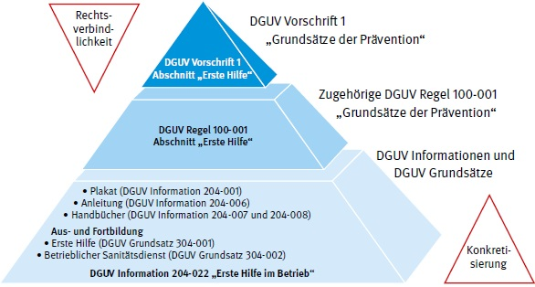

Der aus dem Siebten Buch des Sozialgesetzbuchs (SGB VII) an die Träger der gesetzlichen Unfallversicherung gerichtete Auftrag, für eine wirksame Erste Hilfe zu sorgen, wird in der DGUV Vorschrift 1 "Grundsätze der Prävention" in dem Abschnitt "Erste Hilfe" durch verbindliche Vorgaben weiter ausgeführt.
Die Organisation der Ersten Hilfe im Betrieb wird in der DGUV Regel 100-001 "Grundsätze der Prävention" und in dieser DGUV Information konkretisiert. Die vorliegende DGUV Information 204-022 "Erste Hilfe im Betrieb" erläutert die diesbezüglichen Anforderungen der DGUV Vorschrift 1 ausführlich, wobei sie andere einschlägige Vorschriften – insbesondere das staatliche Recht – mit berücksichtigt. Besondere Anforderungen an die Erste Hilfe in Einrichtungen des öffentlichen Dienstes sind dabei berücksichtigt. Die Bestimmungen für die Erste Hilfe in Schulen, Hochschulen und Kindertageseinrichtungen sowie Hochschulen unterliegen den Bestimmungen der einzelnen Bundesländer und sind teilweise unterschiedlich ausgestaltet und im Rahmen dieser Information nur grundlegend wiedergegeben.
In den DGUV Informationen 204-001 "Plakat Erste Hilfe", 204-006 "Anleitung zur Ersten Hilfe" und 204-007 "Handbuch zur Ersten Hilfe" sowie 204-008 "Handbuch zur Ersten Hilfe in Bildungs- und Betreuungseinrichtungen für Kinder" werden lebensrettende Sofortmaßnahmen und weitere Erste-Hilfe-Maßnahmen in unterschiedlicher Ausprägung vermittelt.
Schließlich werden in den DGUV Grundsätzen 304-001 "Ermächtigung von Stellen für die Aus- und Fortbildung in der Ersten Hilfe" sowie 304-002 "Aus- und Fortbildung für den betrieblichen Sanitätsdienst" die Regelungen näher erläutert, die in den Anforderungskriterien der DGUV Vorschrift 1 genannt sind und von den ausbildenden Stellen für Ersthelfer oder Ersthelferinnen und Betriebssanitäter oder -sanitäterinnen zu erfüllen sind.
Die nachfolgende Darstellung gibt einen schematischen Überblick über die Struktur des Vorschriften- und Regelwerkes der Unfallversicherungsträger zur Ersten Hilfe im Betrieb.
